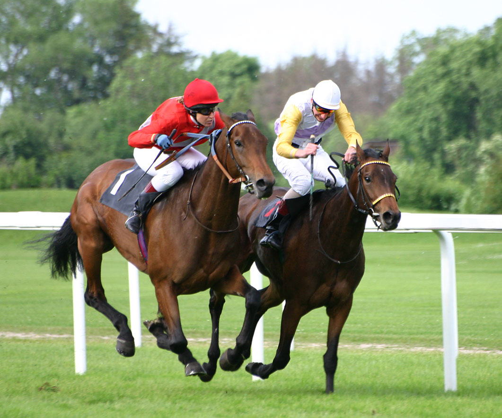
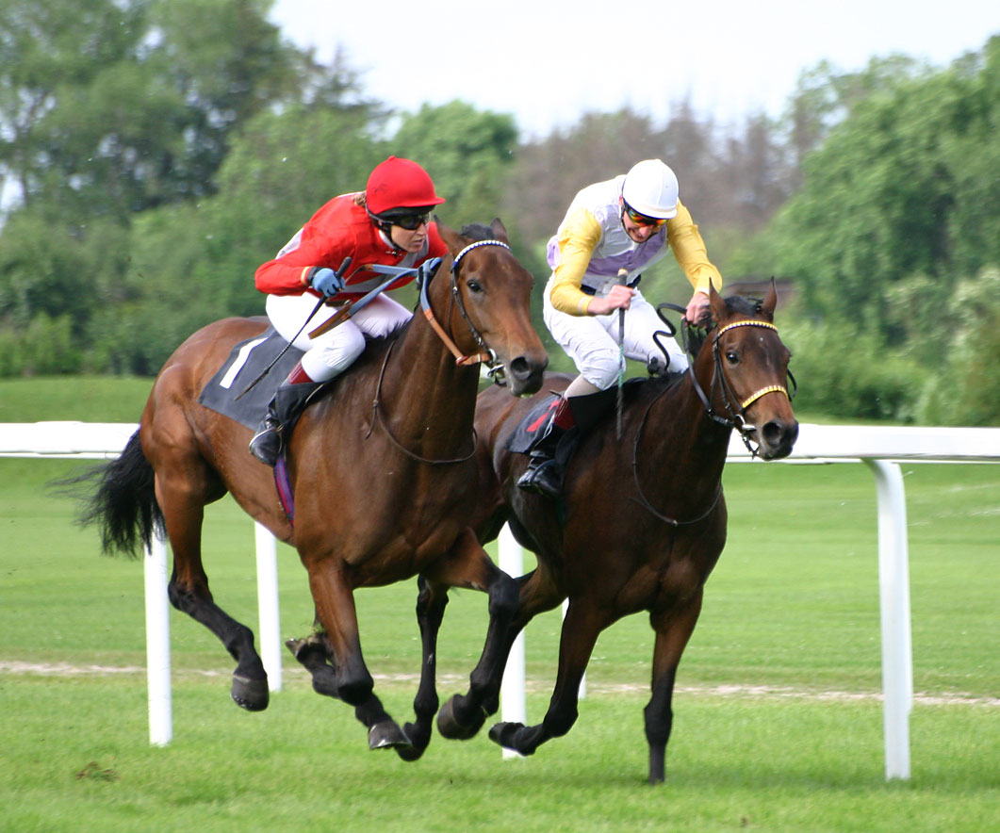

Paardrijden
 

Paardrijden is een sport waarbij een ruiter op een paard rijdt.
De ruiter zit op een zadel en houdt het paard bij de teugels vast.
Zo stuurt hij of zij het paard in de juiste richting.
Paarden kunnen rennen (galloperen) wat minder hard rennen, (draven) en gewoon lopen (stappen).